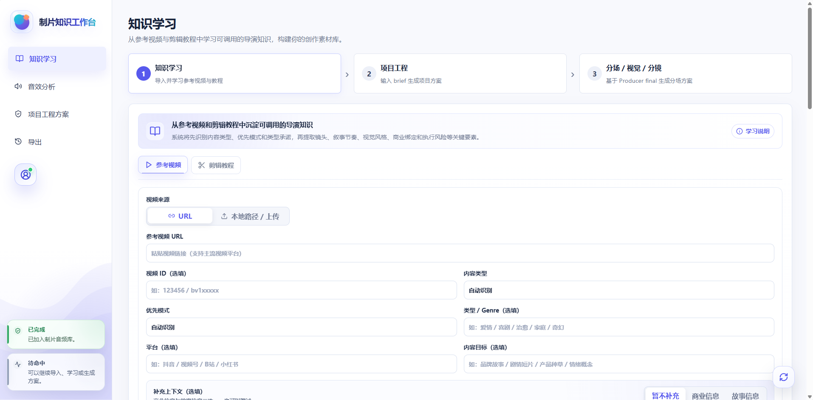
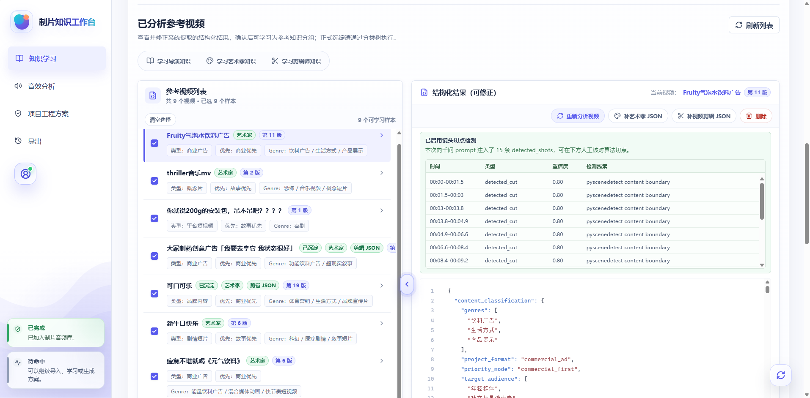
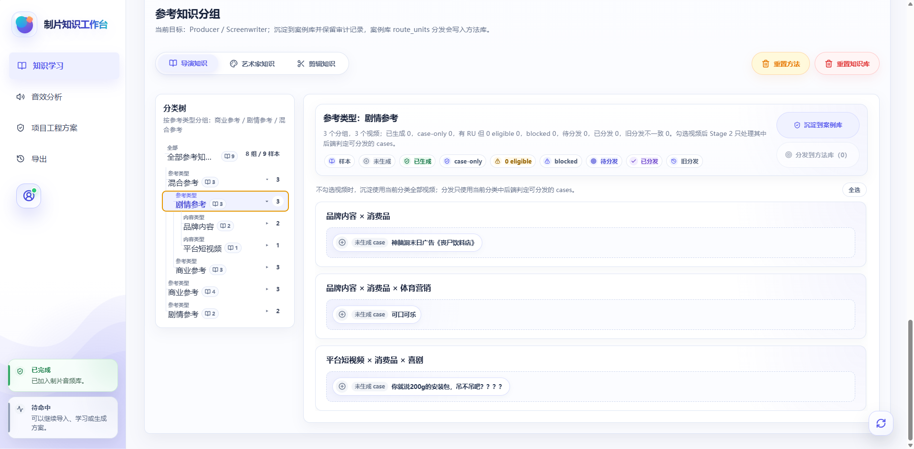
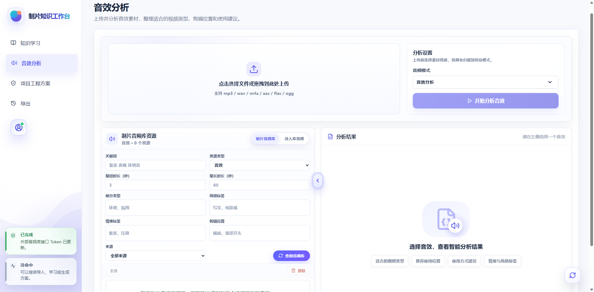
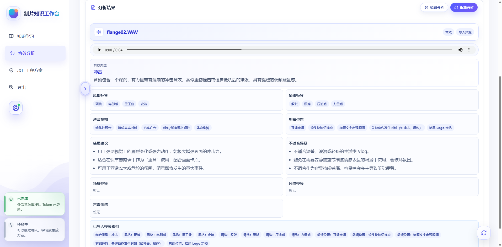

AI 视频生产知识系统
知识学习 × 音效分析
多模态内容生产知识系统
围绕 AI 视频生产团队，把参考视频、剪辑教程和音频素材转化为可复用知识：前端负责清晰可操作的工作流，后端负责结构化分析、案例沉淀和知识库治理。
完整宽图呈现
真实系统截图
知识工程
音频资源分析
智能体知识底座
5真实界面截图，完整保留横向内容
2核心模块：知识学习与音效分析
3音频模式：音效、角色音色、背景音乐
6后续服务六类 AI 视频生产角色知识库
1整体技术流：从素材到可复用知识
技术流程说明
01多模态输入参考视频、剪辑教程、音频素材、美术分析数据、视频分析数据、已批准项目产物。
02前端工作台上传、分析、列表、JSON 修正、分类树、音频筛选与结果预览。
03后端 API后端接口服务 统一承接视频、案例库、两阶段知识沉淀 与音频资产接口。
04证据包将 raw analysis 转换为 public-safe、可追溯、可写 case 的岗位证据。
05案例优先第一阶段 先进入正式案例库，保留来源、边界与可迁移价值。
06知识单元分发第二阶段 由 目标映射 + semantic route 写入六类角色 reference。
2核心界面截图与模块说明
完整宽图界面呈现
模块 01 · 参考视频导入
参考视频导入：给知识学习提供结构化入口
用户可以从 URL 或本地路径上传参考视频，并补充视频 ID、内容类型、优先模式、平台、Genre、内容目标和上下文信息，让后续分析具备明确任务背景。
截图 01 / 完整宽图

1将视频素材转化为可分析、可标注、可沉淀的结构化输入。
2支持商业信息 / 故事信息补充，兼顾广告与叙事内容。
3为后续 正式知识案例 生成保留可追溯来源锚点。
模块 02 · 已分析参考视频
已分析参考视频：可修正的结构化知识材料
分析完成后，系统展示参考视频列表、类别标签、版本状态和结构化 JSON。用户可以对模型提取结果进行修正，确保后续学习不是黑箱。
截图 02 / 完整宽图

1展示类型、优先级、Genre、已沉淀、艺术家、剪辑 JSON 等状态。
2右侧 JSON 编辑区可人工复核，降低误判进入知识库的风险。
3切点检测结果提供剪辑、分镜和视频结构分析的时序证据。
模块 03 · 案例优先沉淀
参考知识分组：从样本集合进入案例库
系统把已分析视频按参考类型和内容类型组织成分类树，并显示已生成、case-only、eligible、blocked、待分发等状态，让用户知道哪些样本能进入 第一阶段 / 第二阶段。
截图 03 / 完整宽图

1按商业参考、剧情参考、品牌内容、平台短视频等维度组织样本。
2“沉淀到案例库”先写正式 case，不直接污染方法库。
3“分发到方法库”只处理 eligible RU，保持治理边界。
模块 04 · 音频资源导入
音效上传与音频库：声音素材结构化入口
音效模块支持上传音频、选择分析模式、查询制片音频库，并按关键词、资源类型、时长、细分类型、风格、情绪和剪辑位置进行筛选。
截图 04 / 完整宽图

1支持 mp3 / wav / m4a / aac / flac / ogg 等格式。
2音频模式包含音效分析、角色音色分析、背景音乐分析。
3让声音素材成为可检索、可复用的生产资源。
模块 05 · 音频分析结果
音频分析结果：从声音到可复用剪辑线索
分析结果会展示播放器、音效类型、摘要、风格标签、情绪标签、适合视频、剪辑位置、使用建议和不适合场景，帮助内容团队快速判断素材价值。
截图 05 / 完整宽图

1把听感描述转成风格、情绪、剪辑位置和适用场景标签。
2可作为视频剪辑、广告节奏和氛围设计的资源筛选依据。
3当前独立于 两阶段知识沉淀，未来可作为可选知识来源。
知识学习模块的产品价值
- 把散落的视频经验转成可追溯样本资产。
- 把“看过一个案例”升级为“可进入知识库的案例卡”。
- 为六类角色知识库提供源证据。
参考视频结构化 JSON分类树第一阶段 case
音效分析模块的产品价值
- 让音效、背景音乐、人声成为可检索、可筛选、可复用的生产资源。
- 为剪辑节奏、情绪氛围和使用场景提供结构化标签。
- 当前独立运行，未来可作为可选输入进入 case-first 沉淀链路。
音效分析角色音色背景音乐音频资源库
知识库治理设计：避免把一次性输出写成长期规则
案例优先先生成 public-safe case，再从 case 抽取可分发知识。
RU 协议每条知识必须有 target、anchor、evidence、method 和 boundary。
后端 目标映射写入文件和 section 只能由后端固定映射决定。
预览 / 正式写入正式写入前先预览影响范围和阻断原因。